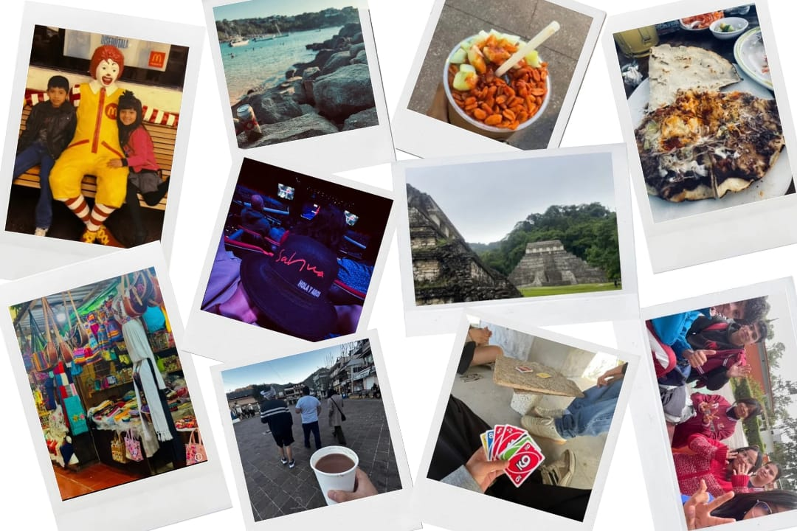
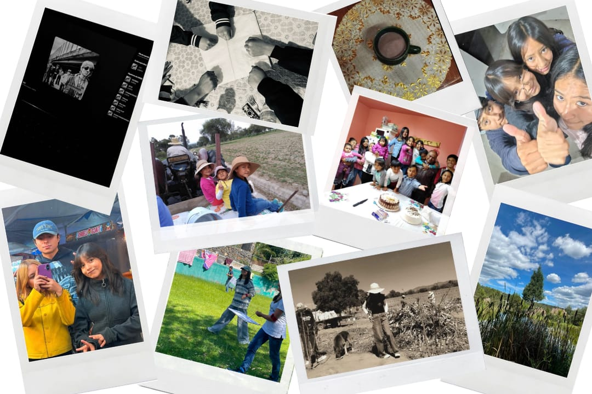
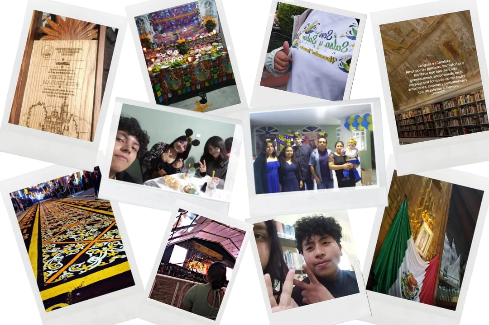
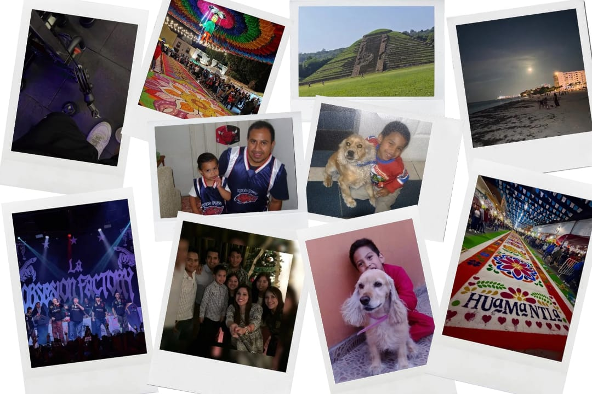
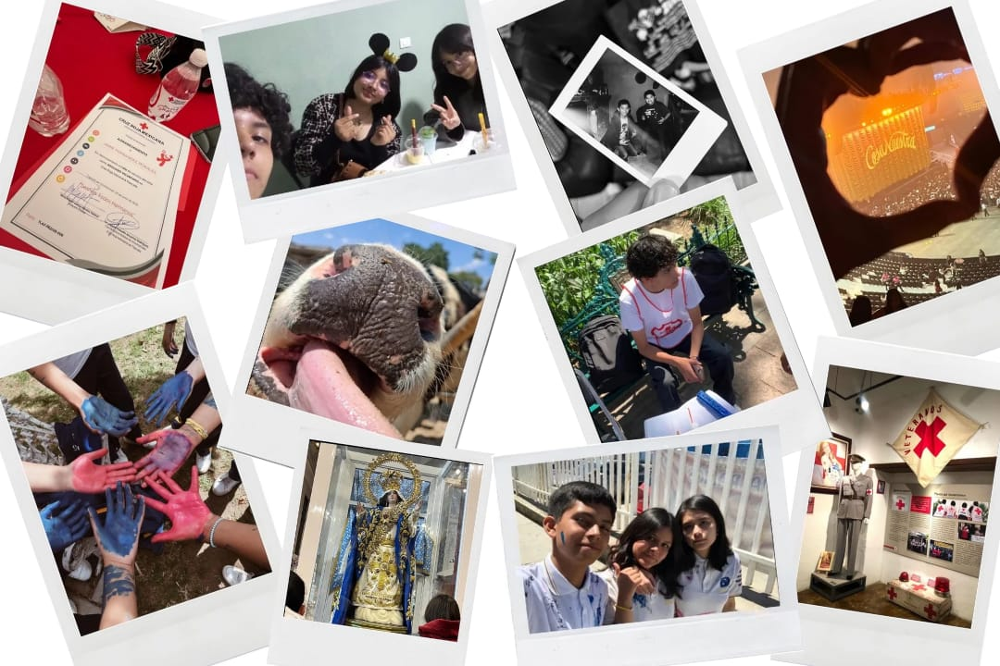

•¿Qué recuerdo de mi infancia considero importante para quien soy actualmente?
Considero que crecer junto a mi hermano es mi recuerdo más importante, y el que me a marcado para ser la persona que soy.
•¿Qué personas han influido en mi forma de pensar o de ser?
Mi hermano, mamá y papá
•¿Qué tradiciones, costumbres o celebraciones forman parte de mi familia o comunidad?
Pasar año nuevo junto a mi familia, poner ofrenda a mis seres queridos fallecidos y festejar en familia el cumpleaños de un miembro de la familia.
•¿Qué lugares, objetos, canciones, alimentos o símbolos me hacen sentir que pertenezco a
un grupo?
La sala de mi casa me hace sentir querida y que pertenezco a mi familia, de igual manera la escuela me hace sentir que pertenezco (pero solo con mi amigos los famosos "wolves”).
Existen muchas canciones que puedo cantar en compañía
•¿Qué elementos comparto con mis compañeros y cuáles hacen única mi identidad?
Comparto las ganas de seguir aprendiendo cosas nuevas, gustos en películas o series, e incluso gustos musicales,
de la misma manera considero que aunque comparto cosas con ellos, cada quien es diferente y único.

Reflexión:
Crecer junto a mi hermano es el recuerdo que más me ha marcado y que define la persona que soy hoy.
Tanto él como mis padres han sido la influencia más profunda en mi forma de ser y de pensar.
Mi sentido de pertenencia y de amor nace en la sala de mi casa, compartiendo juntos tradiciones como
recibir el Año Nuevo, poner la ofrenda a nuestros seres queridos y festejar cada cumpleaños familiar.
De igual forma, en la escuela encuentro mi lugar junto a mi grupo de amigos, los "wolves", con quienes
comparto canciones para cantar en compañía, el gusto por películas y series, y las ganas constantes
de seguir aprendiendo cosas nuevas. Aunque coincidimos en muchos intereses y vivencias con mis
compañeros, reconozco que cada uno tiene su propia esencia, y esa mezcla entre el cariño de mi familia,
las experiencias compartidas y mi propia visión de la vida es lo que hace única e irrepetible mi identidad.
•¿Qué recuerdo de mi infancia considero importante para quien soy actualmente?
Probablemente las platicas que mi papá llegó a tener en su momento, no solo conmigo sino también con mis hermanos, sobre el valorar lo que tenemos, saber aprovechar las oportunidades, el ser responsables y el esforzarnos.
•¿Qué personas han influido en mi forma de pensar o de ser?
Mis padres, mis primos más cercanos y los amigos que tengo actualmente.
•¿Qué tradiciones, costumbres o celebraciones forman parte de mi familia o comunidad?
Las veladas el ultimo sabado de cada mes, el pasar año nuevo en familia, y las reuniones que llega a haber en mi casa ya sea por cumpleaños de alguien o solo porque la reunión surgio de la nada.
•¿Qué lugares, objetos, canciones, alimentos o símbolos me hacen sentir que pertenezco a
un grupo?
Mi casa, pues en cualquier parte de ella convivo con mis primos, en la escuela lo mismo estoy con mis amigos y al entenderme bien tanto con mis primos como con mis amigos, son más ambos lugares y las personas que pueden estar ahí las que me dan ese sentido de pertenencia
•¿Qué elementos comparto con mis compañeros y cuáles hacen única mi identidad?
Con mis compañeros comparto ideas, bromas, gustos e incluso aveces las mismas preocupaciones por nuestro futuro, sin embargo la forma en que pienso ciertos aspectos es diferente a la de ellos lo que hace unica mi identidad.

Reflexión:
Pienso que mi identidad se ha formado a lo largo del tiempo en su mayoria por los recuerdos importantes de mi pasado e incluso por las experiencias que tengo en el presente, en cada recuerdo la presencia de mi familia y de los amigos que tengo ha sido totalmente importe, el compartir lugares, celebraciones, gustos, preocupaciones, compartir el día a día con ellos los ha vuelto una parte importante de mi vida y hasta cierto punto influyentes en mi forma de ser. Sin embargo las experiencias individuales que he tenido al descubrir mis propios gustos, intereses y metas has sido la otra parte fundamental que conforma la identidad que tengo ahora.
Definitivamentes los recuerdos que tengo ya sea en compañía o yo sola son importantes en mi forma de ser la cual se ve reflejada en el día a día que llego a compartir con los demás.
•¿Qué recuerdo de mi infancia considero importante para quien soy actualmente?
Considero que la educación que me brindaron mis padres y las distintas actividades a la que me he dedicado son lo más importante para quien soy actualmente.
•¿Qué personas han influido en mi forma de pensar o de ser?
Mi mamá y papá
•¿Qué tradiciones, costumbres o celebraciones forman parte de mi familia o comunidad?
Festejar el cumpleaños de cada integrante de mi familia, así como recordar a familiares difuntos y actividades religiosas como la semana santa etc...
•¿Qué lugares, objetos, canciones, alimentos o símbolos me hacen sentir que pertenezco a
un grupo?
La escuela es el lugar donde comparto más momentos con mis amigos, existen varias canciones que puedo cantar junto a otras personas, y todo esto me hace sentir querida por mi familia y amigos.
•¿Qué elementos comparto con mis compañeros y cuáles hacen única mi identidad?
Comparto los gustos en varias comidas, series o películas, y con una de mis amigas casi los mismos gustos musicales, y me hace única la forma de vestirme y pensar a comparación de ellos.

Reflexión:
Siento que mi forma de ser se ha ido armando con todo lo que he aprendido en casa y con las experiencias del día a día. La educación, el cariño y los valores que me han dado mi mamá y mi papá son, sin duda, la base de todo lo que soy y de la manera en que veo la vida. Además, me marca mucho lo que vivimos en familia, como celebrar el cumpleaños de cada uno, recordar con cariño a los que ya no están o vivir nuestras tradiciones religiosas; todo eso me hace sentir muy conectada con mis raíces y antepasados.
Por otro lado, la escuela y mis amigos son una parte clave en mi rutina, porque ahí es donde comparto los mejores momentos. Me encanta darme cuenta de que coincidimos en las comidas, las series, las películas o incluso en las canciones que cantamos juntos, porque todo eso me hace sentir realmente querida y aceptada. Pero aun compartiendo tanto con ellos, sé que tengo mi propio sello: mi forma de vestir y mi manera de pensar son completamente mías y es lo que me distingue. Al final, siento que soy un equilibrio entre el amor de mi familia y la personalidad única que voy marcando a mi propio estilo.
•¿Qué recuerdo de mi infancia considero importante para quien soy actualmente?
La educación que me dieron en mi casa desde pequeño, junto con mis primeras experiencias practicando diferentes actividades y deportes, ya que me enseñaron disciplina, perseverancia y valores fundamentales.
•¿Qué personas han influido en mi forma de pensar o de ser?
Mis padres y mi abuelo
•¿Qué tradiciones, costumbres o celebraciones forman parte de mi familia o comunidad?
Las celebraciones de fin de año, el Día de Muertos, navidad , cumpleaños y actividades religiosas
•¿Qué lugares, objetos, canciones, alimentos o símbolos me hacen sentir que pertenezco a un grupo?
Mi escuela y mi casa como espacios de convivencia,
•¿Qué elementos comparto con mis compañeros y cuáles hacen única mi identidad?
Comparto con mis compañeros el entorno escolar, gustos musicales, pasatiempos y comida

Reflexión:
Mi identidad personal y colectiva está conformada por los momentos, las personas y las tradiciones que me han acompañado a lo largo de mi vida.
Los recuerdos compartidos con mi familia, desde mi infancia hasta los viajes y convivencias especiales, han cimentado los valores con los que crezco día a día. Asimismo, ser parte de una comunidad con tradiciones tan ricas como la elaboración de los tapetes de Huamantla fortalece mi sentido de pertenencia y orgullo por mi entorno. Por otro lado, mis intereses actuales reflejan la persona en la que me estoy convirtiendo, el deporte, mientras que la música conectan con mis gustos y pasiones. Todos estos elementos unidos construyen mi memoria, mi estilo propio y mi forma de ser
•¿Qué recuerdo de mi infancia considero importante para quien soy actualmente?
los valores que te enseñan dentro y fuera de la escuela para ser mejores personas a futuro
•¿Qué personas han influido en mi forma de pensar o de ser?
familia,amigos etc, ya que comparto la mayoría de tiempo con ellos
•¿Qué tradiciones, costumbres o celebraciones forman parte de mi familia o comunidad?
No tengo ninguna festividad
•¿Qué lugares, objetos, canciones, alimentos o símbolos me hacen sentir que pertenezco a un grupo?
Me siento parte de un grupo cuando estoy en la escuela, en actividades deportivas
•¿Qué elementos comparto con mis compañeros y cuáles hacen única mi identidad?
Con mis compañeros comparto el salón, las clases, las tareas y muchas experiencias

Reflexión:
Mi identidad se ha formado gracias a los recuerdos y enseñanzas de mi infancia.
Los valores que me dieron en casa y en la escuela me han enseñado a ser mejor persona.
Mi familia y mis amigos han influido mucho en mi forma de pensar y de actuar.
Con ellos he aprendido a ser más responsable y seguro de mí mismo.
Aunque no tenemos tradiciones muy grandes, celebrar juntos me hace sentir que pertenezco.
Lugares como la escuela y el deporte me hacen sentir parte de un grupo.
Comparto muchas cosas con mis compañeros, pero cada uno tiene algo que lo hace único.
Al final, mi identidad es la combinación de todo lo que he vivido y de las personas que me rodean.